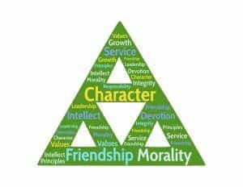

Quintus can be found at qcurtius.com. He is the author of the books On Duties, Thirty Seven, Sallust: The Conspiracy Of Catiline And The War Of Jugurtha, and other books. His work has been reviewed at Taki's Magazine. He can be followed on Twitter


Someone once said that our lives are the sum totals of the decisions we make. If this is true, and I think it is, then the next logical step for us should be to look for ways to learn how to make decisions. What is the right thing, and what is the wrong thing? Are there any metrics or standards by which we can judge what is good and bad, or expedient and inexpedient?
But our modern environments give us little in the way of help. We instinctively sense that society itself does not really have the answers. Having cut off the modern generations from the ancient moral code that has sustained Western social systems for centuries, the modern media offers little of substance to replace it. Or perhaps it does: a blind hedonism and a debilitating relativism, both capped with a corona of futility.
Modern man deserves better. Voices that have been suppressed for too long must be re-animated, dusted off, and pored over. One of those voices is Cicero’s On Duties. I have had the pleasure of translating it, and thought I might offer a few thoughts on why the book is worth reading. I will also state why I believe my version is superior to the others currently available.
On Duties is meant to be a practical guide to conduct. In broad terms, the volume is separated into three “books,” which discuss the following subjects:
In specific terms, however, the book is a gold mine of practical guidance on a huge variety of topics. It’s one of those books you can open at random anywhere, and find actionable life advice in every sentence.
This is no airy disquisition on metaphysical labyrinths. It is firmly grounded in practicality. Just to point out a few topics (among a huge number), Cicero talks about:
These are just a few of the dozens of topics discussed in the book. Most importantly, the book provides what is sorely lacking in today’s educational system: judgment. It tells us what is right, and it tells us what is wrong. There is no mealy-mouthed political correctness here. There is only the unvarnished advice of a man who has lived through much, and learned much.
On Duties may be the most famous of Cicero’s many philosophical works. After the Gutenberg Bible, it was the first printed book published in Europe after the advent of the printing press. Broadly speaking, the book is about ethics and conduct. It seeks to offer guidance to men on how they should conduct themselves, and how they should go about making decisions.
It is not difficult to see why the book has enjoyed such influence. On Duties is a very practical guide to conduct, responsibilities, and choices. And isn’t ethics the highest sort of knowledge? It deals with how we should live our lives. It deals with which paths to take, which roads to follow, and which principles we should base our lives on.

We are never for a moment led into an arid wilderness of metaphysics or gratuitous speculations. Written at a time of great personal anguish for Cicero, the book has a sincerity that draws us in from the opening chapters.
The reader feels that Cicero is a man who has learned much from the battlefields of politics, the courtroom, and personal relations. We sense that this is a man who has managed to maintain his moral compass, and who now wishes to pass on some of that wisdom to us.
But perhaps what elevates On Duties to true greatness is its soaring and inspiring vision of man. This is no dry collection of Poor Richard-esque admonitions to do good and shun evil; this is a normative vision of human behavior that seeks to bring out the very best in us.
The work was written for his son Marcus, who was at the time studying in Athens.
Perhaps his grandest concept—one that lingers in the mind of the reader long after he has closed the cover of the book—is the idea of “greatness of spirit” (magnitudo animi). Cicero gives us an idea of what he means by greatness of spirit in I.20 when he tells us:
A strong and great soul is altogether distinguished by two features. One is the contempt for the external things of this world. The great soul is persuaded that no man ought to wonder at, hope for, or seek after anything except those things related to goodness and virtue, and that he should succumb to neither another man, nor a disturbance of the spirit, nor a trial of Fortune. The second feature is that, when you have molded your soul with this sort of attitude, as I said above, you perform great achievements of the highest utility which are extremely arduous, laborious, and full of danger to life and to many other things related to one’s livelihood.
With his concept of magnitudo animi, Cicero thus takes the discussion to a whole other level. What we have here is an inspiring vision of man, something that penetrates the reader’s heart like an arrow.
This, I believe, is the essential thread running through the book. It is this which makes On Duties such an enduring treasure. His sincere, earnest vision is timeless, and this is why we still read him today. Like any great orator (and was there anyone greater?) he aims far higher, for more universal and evocative principles. And he succeeds brilliantly.
When we put down On Duties, we feel imbued by this same greatness of spirit, and are prepared to renew the contest of life with optimism and fortitude.
Despite the book’s popularity and influence, there has long been a need for a new, annotated translation of this classic.
What may have sufficed for one century or generation may be found wanting for twenty-first century readers. Hence this work. My translation departs from its predecessors in three important respects.
First, most of the existing English translations were done many years ago. Such efforts, which may have been adequate for their era, unavoidably begin to show their age after a certain point. The modern reader wants something accurate and readable, yet which at the same time preserves the classic patina of the original.
Unfortunately, some of the existing translations confront the reader with such a hopeless mass of semi-colons, stacked clauses, archaic nineteenth century diction, and knotted sentences that reading them is a chore rather than a pleasure. Cicero was an eloquent stylist, always conscious of his audience, and this type of translation does injustice to the original.
We must remember that Cicero was always the lawyer, arguing his points with force, conviction, and clarity. When he repeats himself, he does so deliberately. When he castigates political opponents, he does so for a reason. When he tells us multiple times that nothing can be expedient which is not also morally good, he does so deliberately. These are not accidents.

He knows that juries, like book readers, need emotional connection, summary, and repetition. Some translators, because they are not trial attorneys by profession, entirely miss this point.
But those of us who have tried cases before juries—and I am not aware of any other translator of On Duties who was also a trial lawyer—see the method and purpose in Cicero’s rhetoric. But the translator must not veer to the other extreme: while Cicero did not write like a Victorian or Edwardian novelist, he did not sound like Hemingway, either.
So when we update On Duties for the modern era, we must go about the task very carefully, keeping these points in mind.
As I see it, the most important duty of the translator is to find that balance between fidelity to the original text and the stylistic rhythms of modern written English. Every language beats with its own heart. What may make perfect sense in a Latin sentence may be anything but clear in a literal English rendering.
In such situations, we must use the grammatical tools available to give Cicero his proper voice. Labyrinthine sentences may occasionally need to be broken into parts. Latin pronouns may need to be specifically clarified. Cicero’s love of the passive voice must sometimes be tempered with use of the active voice. We must know when Cicero really means “I” when he writes “we.” He can be evasive and slithery one moment, and brutally frank at another.
At times, his meaning resides in his qualifications and obliquities. And so on. Modern, lucid diction should be the translator’s default position, unless the context clearly suggests otherwise.
Secondly, it became apparent that a much better way of organizing the material was needed. On Duties deals with a great many topics and terms. Like all classical writings, the text long ago was separated into “books,” chapters, and subsections by scribes and editors; but Cicero never gave his chapters descriptive headings or names.
Locating a topic or term easily can then present a problem. Some editors have made use of marginal notes, but these tend to clutter the text, and still require the reader to thumb through too many pages. I have thus opted to create a descriptive table of contents at the beginning of the book which lists the main topics of each chapter (indicated by Roman numerals).
This feature, together with the index, solves the problem of locating subjects and topics efficiently. This is a book that is meant to be used, studied, and discussed.
Thirdly, the modern reader requires descriptive footnotes that presume no previous knowledge of Roman history. A translator can no longer take it for granted that a reader in 2016 will recognize, for example, the names Regulus or Titus Manlius Torquatus.
As stated above, most versions of On Duties were produced for audiences early in the previous century who were assumed to have some knowledge of Roman history or Latin, and likely both. This translation presupposes no such knowledge.
It is accessible to all, not just to students of the classics. Several hundred footnotes explain every historical name and reference, as well as obscure terms, linguistic nuances, places, topics, or textual issues. Commentary sections at the end of each book highlight important issues raised in the text.
What On Duties gives us is a frame of reference for making decisions. We have at last a guide that presents us with a positive view of man that can help us take positive, specific action.